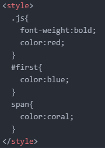

CSS를 이용해서 요소들을 제어할 때
'선택자'라는 것을 잘 사용하여 타겟팅을 잘 해야한다.
그래야지만 우리가 주고 싶은 효과를 효율적으로 잘 줄 수 있다.
JavaScript is 명일 the world's most popular programming language.
JavaScript is the programming 명일 language of the Web.
JavaScript is easy to 명일 learn.
This tutorial will teach 명일 you JavaScript from basic to advanced.

이처럼 선택자의 우선순위는
ID(#) → class(.) → span 순이다.
ID는 class의 색인 red와 span의 색인 coral의 영향을 다 받고 있지만,
ID의 색인 blue를 택했다.
마찬가지로 class는 span의 영향을 받고 있지만,
class의 색인 red를 택했다.
2022.06.14 김명일